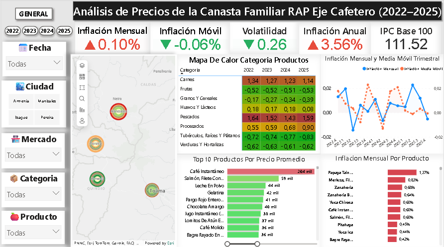
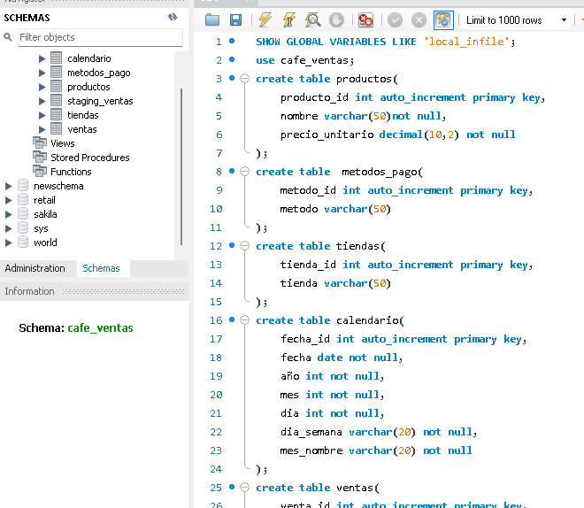
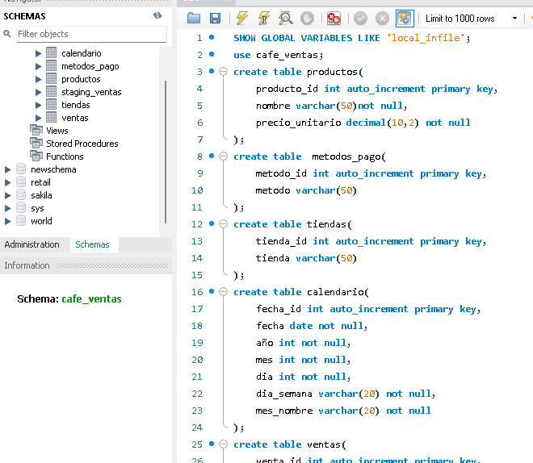

David Orlando Pacheco Corredor
Data Analyst | BI | Economics & Finance
Sobre mí
Soy economista y especialista en finanzas con experiencia en análisis de datos, inteligencia de negocios y analítica financiera. He trabajado en el análisis de información operativa y financiera para apoyar la toma de decisiones, el seguimiento de indicadores y la generación de reportes técnicos.
Tengo interés en roles de análisis de datos y análisis financiero, especialmente en contextos institucionales, donde el uso de datos es clave para la evaluación de riesgos, desempeño y resultados.
Habilidades técnicas
- Análisis de datos con Python (Pandas, NumPy, Scikit-learn)
- Consultas SQL para análisis y extracción de información
- Business Intelligence con Power BI
- Excel avanzado para análisis financiero y operativo
- Análisis estadístico y econométrico (Stata)
- Interpretación de información financiera
Habilidades blandas
- Pensamiento analítico y crítico
- Capacidad para comunicar resultados técnicos
- Trabajo con información compleja
- Organización y atención al detalle
- Aprendizaje continuo
Proyectos
Análisis de precios de la canasta familiar en el eje cafetero
Este proyecto analiza la variación de precios de la canasta familiar en el Eje Cafetero utilizando técnicas de ETL, modelamiento en Power BI y la construcción de indicadores económicos como inflación mensual, volatilidad e IPC base 100. El objetivo es identificar comportamientos por producto, categoría y ciudad, y construir un tablero profesional e interactivo.
Analisis de ventas cafetería
 

Este proyecto analizó las ventas para una cafetería mediante el uso de SQL para modelamiento de datos, excel para dashbord y automatización de informes mediante macros; se creó el modelo relacional de base de datos, ETL, consultas SQL para KPIs